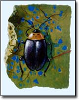

For many years we noticed the tiny holes in the leaves of different garden plants before we actually went investigating. We were continually frustrated at seeing only the holes, but not actually seeing the bugs. It was after reading about these little mysteries that we realized flea beetles are given the name "flea" because they have great jumping back legs and actually leap off their chosen leaves when big monsters, like gardeners, approach. We hadn't been observant enough to notice this escape maneuver.
You have to look closely to see these tiny creatures, members of about 370 species of one subfamily of the beetle order Coleoptera. The adults can be from 1/16 to 1/5 of an inch long, depending on the species. Under a hand lens, the different species usually will be a dark color, but a few species will show some light-colored stripes. At least a dozen different species are happy munching on common garden crops. Some species will feed on more than one plant crop, but many are tied to single crops or closely related crops.
Flea beetles are found throughout North America. Adults overwinter and lay eggs in early spring on or in the soil near the base of the host plant. The egg-larval-pupal stages take four to five weeks, after which the new adults emerge in search of fresh greenery. The thin, white larvae do some feeding on roots of the host plants and leave snaky markings on potatoes, but the adults are the hungriest competitors for our garden groceries, and most damage is done to the foliage. Adults are attracted to young plants and chew the typical "shot-holes" in the underside of leaves. Some plants that attract these beetles are cole crops, corn, eggplant, grapes, potatoes, spinach, sweet potatoes, tobacco, tomatoes and cucumbers.
The best perennial defense against flea beetles is a healthy, nutritious garden soil. When crops grow quickly and with balanced nutrition, the growth can compensate for slight damage. The easiest tactic for immediate defense is to use row covers in the early spring. The beetles eschew chewing on older plants, so the covers simply can be removed as the season progresses.
Presuming you are rotating crops, you won't trap beetles under the covers that remain from the same crop the previous year. Crop rotation, though obviously good for other reasons, does not fool the very mobile adult flea beetle. Shallow hoeing for weeds will do double duty as flea beetle eggs are exposed to the air and predators. A few `Chinese Daikon' or 'Snow Belle' radishes work well as a flea beetle catch-crop when interplanted with cole crops. (For more pest-control tactics, see www.attra.ncat.org/pest.html
A second or third generation of flea beetles can appear in a single summer, so when putting out late plantings for fall, cover them when young, too.
Flea beetles also feed on many nongarden plants, including Virginia creeper, pokeweed, horse nettle, pigweed and wild mustard family plants.
- John Stuart
Mother Earth News
|
 The three-spotted flea beetle |
|
|